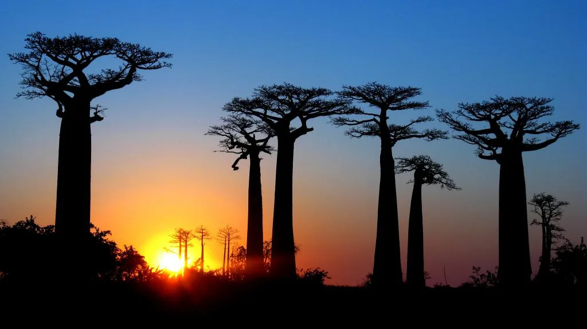

Data
Capital: Antananarivo
Area: 587,041 km²
Population: About 30 million
Languages: Malagasy and French
Region: Indian Ocean, off East Africa
Currency: Malagasy ariary
Weather
City: Antananarivo
Temperature: 8 °C
Wind speed: 10 km/h
Wind chill: N/A